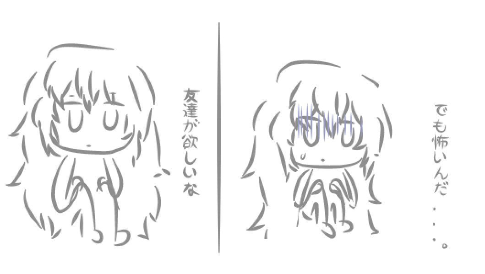

This is the DEFAULT PAGE. I have no current plans to make it detailed, so in order to prevent it from feeling too empty, I put Teto here.
Rambles and dumb thoughts
時折考えを取り除くことがある
▣ 2023-12-03
December always makes me somewhat anxious. Also! It's been getting as cold as -15ºC already...
▣ 2023-11-23
I still have a difficult time believing people out there do appreciate my company and consider me as a friend. Not in a low self-esteem way, I believe - it's more to do with how I enjoy spending time which is often in solitude. I equate my social existence that of a ghost, or air, so enjoying my presence might be equivalent of these things.
It might be why I've always felt isolated even if others make an effort to involve me. I think I just have a built-in high security firewall in my heart or something. ( ─‿‿─)
▣ 2023-11-06
年の展望
A bit of a different post this time... well, most of my posts has just been streams of consciousness with nothing much to add. I've been thinking about how much I've grown this year... O_O! not physically, that is I've always lived my life afraid of making mistakes but, slowly, I've been starting to be okay with making some as long as I take care to learn to not repeat them again.
▣ 2023-11-03

[hasnt eaten for 3 days] Abafnafhahfhafhaf i want konbini cookies now!!! Cookies with coffee milk!!!!!!
▣ 2023-10-30
I don't feel so good . Even eating toast makes me wantto throw up... andI'm so much more sleepy than usual... lightheaded, too.
▣ 2023-10-29
Slept for 12 hours, was awake for about ~4 hours then went to sleep again for another 12 hours... =v=
▣ 2023-10-20

gjshjfhasfh . I currently cannot formulate thoughts well. My tummy hurwts. Very ouchie.
(Hops on in VRChat of my own free will this time.)
(Fails to say hi to any of my friends)
(Leaves)
Yeah, I'm somewhat of a master of socialising.
▣ 2023-10-08

I ended up spending 7+ hours on this... woops. It's-a-me.
▣ 2023-10-06

im tiwed. Always tired... I have a (looks up the translation for the swedish word Samtal)... Call to make to a stranger in 3 days regarding my college education and I think i am going to explode from nervousness (hasn't socialized with real REAL REAL life people for 6 years and even then I only start,ed socializing 4 months ago on the internet)
▣ 2023-09-22
[Forgets to re-stock my medicine this month] Will likely be very lethargic for the next few days... iron levels 100% will plummet. Tummy also hurts when I drink coffee or eat anything. [Keels over and dies]
I've less energy to socialise than usual... might sleep more. I'll do a self-imposed social isolation again, maybe for 3 days. I hope I can sleep for 20 hours this time.
▣ 2023-09-07
わかめ

▣ 2023-09-01
I was taking a shower and thought I heard something trying to open the door... so I waited in the bathroom for 1 hour before having the courage to unlock the door.
Nothing/nobody was in my house but I think I should start taking my phone to the bathroom more often in case something like that happens again or if I feel ill because of my low iron levels.
▣ 2023-08-31
誕生日おめでとう、ミクちゃん！ 生まれてくれてありがとう。
▣ 2023-08-26
Knowing that I exist in someone else's conscience is enough to drain my energy. I exist in someone else's conscience? (Keels over and dies)
▣ 2023-08-21
I managed to grow closer to people than I ever had in my entire life, this summer. It feels weird... it makes me want to run away and go back to not being known by anyone again.
▣ 2023-08-13
Sending college admissions at this time of the year is a lot of work. Paperwork, paperwork, why can't they just make it simple to send applications!? If society craves workers so badly, make it a little easier to use the UI at least! Aside from that, I've been practicing cooking and baking. Granted, I ended up ruining most ingredients but I'm not giving up. I will no longer live solely off take-out food and onigiri.
Thinking about going to a pool since I never went to one before, but then I get scared because it might not be safe for me to go alone. My mom used to tell me I'd be kidnapped if I ever went alone outside when I was little...
▣ 2023-08-06
I cast the spell Isolatus Exodium.
▣ 2023-07-30
I'm trying my best to open up and talk to people honestly. It's very difficult and scary, but I want to improve and try to believe in others.


▣ 2023-07-28
I had an appointment with a doctor today, and to check if I've been growing OK, I got measured to be 146cm long by my physician. The reason why I got 149cm before was due to the heels I was wearing back then...
Needless to say, I am in a bad mood due to these news. Very disappointed. I don't think I want to talk to people today.
୧((#Φ益Φ#))୨
▣ 2023-07-23
Went outside to retrieve my Miku figurines (and scarily enough, learned how to take the bus for the first time at the age of 19.)
▣ 2023-07-18

Tower of ミクちゃん featuring ねぎ plushie. Had to use a chair to reach the top.


むかしむかしのきょうのぼく nendoroid.
Site updates
▣ 2023-11-23
My website has been down for ~7 days, thank you Github very cool.
▣ 2023-08-07
Going to fix the site's mobile HTML.
▣ 2023-07-14
Added the 2023 LOG. Seems it's become a running theme for me to add year sections halfway into the current year...
▣ 2023-02-10
久しぶり
Time flies, doesn't it. I doubt that anyone actively visits this site, so this update may as well be pointless, but the site is most likely in an indefinite hiatus.
I'm not sure if I want to delete it, truth to be told. I often feel the urge to delete a lot of the things I make and share on the internet, but this is one of the few ones where I don't really mind keeping an archive of it by simply letting it exist without any updates.
▣ 2022-06-05
Hi. I finally updated the 2022 LOG.
▣ 2022-05-23

▣ 2022-03-17
It has been a year since I've made this website, so to commemorate this, here is how this website looked like a year ago, 2021 March:
")
▣ 2022-02-18
Ideally, the website would look like a lot more minimalistic than this. However, on other monitors (15.6 inch monitors, specifically), the website looks too... unrefined. It's bothersome, so I'll have to try to find a way to make the website look palatable for those with a smaller monitor.
▣ 2021-09-03
いつになったらあたしの脳はお付き合いの幸福に対する脅威と見なさないようになるのだろう
▣ 2021-03-28
Currently in process of updating pages. You may see experimental pages/coding, and other new additions.
▣ 2021-01-28
Coding is difficult as a beginner, so I've been relying on multiple sources to help me learn the basics. At the very least, I, well... know the basics. I do not think I will ever touch CSS outside of simply editing the height and width, along with other simple properties.
The feeling of working on something like coding a website feels... nice. It is like you own the very thing you've made, despite it being rather simplistic. Sort of like the feeling where you are just satisfied with the fact that you've made something, regardless of its overall quality.
Games
▣ 2023-12-22
I like this song, it's gothic... I wish there was a gothic lolita module for Miku. Machigerita Machigerita Machigerita!!!
▣ 2023-12-15
Didn't play Muse Dash for a month, switched to better new keybinds than just using the mouse to play the game, and...???

It's a bit like with project diva when I put off playing it for a month and then manage to full combo a difficult song with ease (that I was trying to do for the past weeks prior...)
▣ 2023-11-27
I still play games, I just don't feel the need to document them... but you can have some PJD gameplay. _(´ཀ`」 ∠)_
▣ 2022-03-30
▣ 2022-02-15
I played Hatoful Boyfriend on this holiday.


Media (anime, manga, etc)
▣ 2023-11-28


I finally got around to watching hidamari sketch last week and finished S1 & Specials today! watching it made me wish I also had a group of female friends with similar hobbies... it reminded me a lot of Lucky Star but with less otaku culture references. It's just cute girls chilling and hanging out with Shaft visuals!!! (This is also a good thing). I like this video a lot. Shukudai dayo!!

I spotted Itoshiki Nozomu from Sayonara Zetsubou Sensei twice in the HDMR specials (๑•̀ㅁ•́๑)... I feel like these easter eggs were there to celebrate SZS's first season since HDMR Sketch S1 aired Winter 2007, in which Shaft hadn't adapted SZS yet, but after the adaptation occured (Sayonara Zetsubou Sensei S1 aired on Summer 2007), it got referenced in the HDMR Sketch Specials (Fall 2007) which aired after SZS's first season. It's cool! I only found this out after looking up the release dates myself. I hope there's the [Turn...] [Turn...] [Stare...] [Turn...] ZETSUBOU SHITA! head turns in the later HDMR seasons.
But it truly was surprising since SZS's author is Kouji Kumeta, and HDMR Sketch's author is Ume Aoki (two completely different people and genres in their works). It was an emotional whiplash. I'd have expected Shaft to reference a more lighthearted anime they adapted around that timespan... like Tsukuyomi or Uta∽Kata. ﾙﾝﾊﾞﾙﾝﾊﾞﾙﾝﾊﾞﾙﾝﾊﾞﾙﾝﾊﾞ
▣ 2023-11-14

"If the kids are happy and healthy, that makes it a good world."
This anime is so underrated!! It's a beautiful work of art!!!! Please watch Alice to Zouroku!!!!!! The art style also looks really similar to Madoka Magica's art style but I couldn't find the character designer of Madoka on the staff profile of this anime...
Imaginative children trying to learn the workings of the exterior world around them and the adults who try to protect them, who go through rough times. One who does not have a family but finds one, and one who does but does not feel the presence of hers, but eventually manages to reach her parents' heart. It's really good. It's about growing up and exploring the world, and finding people who will help you, and people you want to help, too!!! Also the visuals and music is so good!!! My favourite OST from this anime is "Memories of Wonderland".
It was also sometimes jarring to watch this anime since Sana and I are very similar in the sense that we both don't know much about the outside world due to seclusion but spend time trying to learn more, have trouble admitting our faults and are learning to associate with people but end up saying the wrong things occasionally. Sana also uses "お前" to refer to others... it was like watching myself in a third person perspective. So seeing her grow and change throughout the anime makes me feel like I can, too.


▣ 2023-10-13
Ha ve mercy on my wretched soul, I have been too sleepy to watch or do anything aside from watchign FWMC. I did finish S4 of Zero no Tsukaima though. I'm going to miss watching Louise and Saito bicker... maybe I'll read the series' light novel and manga to fill the void.
▣ 2023-09-09
Recently, I've been watching Zero no Tsukaima. It was surprisingly heartfelt and profound for an ...えっち... isekai anime, especially in S2 with the anti-war morale.
スキ? キライ!? スキ!!! « The ending song I've been listening to on repeat.


▣ 2023-08-16

I watched Aqua's 5th anni live concert & the opening about being a hikikomori and isolating yourself from others made me cry... I was like "Ahhh! Aqua, how dare you make me cry 5 minutes into the stream!!" And after I thought the tearjerking was over, the opening made its return 40 minutes into the stream. Then when she started singing Aquairo Palette, I was bawling.
Aside from me being an emotionally sensitive person, STARTEND's performance of REOL's No Title was very good, Towa's deep vocals always makes the unit sound so much more wonderful with Suisei and Aqua.
▣ 2023-08-07
▣ 2023-07-30


▣ 2023-07-27
I've been watching Kill me Baby, rewatched Inu x Boku SS for the second time and cried again as it ended.


▣ 2023-05-16
Still consuming media, I just haven't felt the need to document it. There's something more important... yes, that's right... my VOCALOID playlist has reached 5k videos, which is the maximum limit of the videos you can add in a YouTube playlist.
With 96.75% watchtime, I am able to do this math: (96.75 / 100) * 5000
It equals to 4837.5 videos watched. The ones unwatched were added because there were songs from a long time ago that I recognized and put them in. I made sure to add all songs from the producers channels, not reposts. That being said some were only on NicoNicoDouga.
How's that? Amazing, right?!
▣ 2022-05-23
Vocaloid
I think about wowaka and siinamota a lot 散々躓いたダンスを、 そう、祭壇の上で踊るの？ world's end dancehall still makes me feel the same emotions i had when hearing it for the first time a decade ago.
Vocaloids are an imitation of human beings but the feelings human beings give to them is very much real, the community surrounding it is real, the feelings are there in the empty husks of these vocal robots. The fake is of far greater value. In its deliberate attempt to be real, it's more real than the real thing.


Takane's shot says もう一回 with a similar pose. I feel that it was a deliberate reference.
▣ 2022-04-21

▣ 2022-03-29
Hyadain's カカカタ☆カタオモイ☆
The scenery I've overlooked was 110 million! 110 million!
▣ 2022-03-23

Inio Asano anime... I've yet to finish this manga, though I am almost done with it. It has been a while since I've read it, so the anime adaption will surely help me enjoy DEDEDE once again. The procrastination on finishing it needs to stop.
Though this is highly improbable, I wonder if Oyasumi Punpun will receive an adaptation. Maybe, but I don't think it will receive a TV Broadcast for all the mature themes in the work. It's an interesting thought to entertain, though. Not sure how you can exactly replicate Asano-san's art style when adapting his work, to begin with.